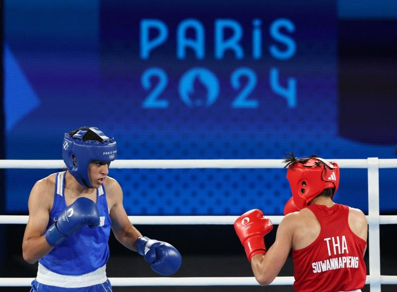

奥运女拳手性别问题受关注，医师说明，在低于万分之一几率下，有3种状况可能导致具XY染色体、但性征外观完全是女性；此情况下，医疗团队不会因染色体表现，就要求病患变性。
国际拳击总会（IBA）5日于巴黎召开记者会说明女拳手林郁婷和克莉芙（Imane Khelif）去年世锦赛遭取消资格的原因。国际拳总前医学委员菲利帕兹（Ioannis Filippatos）指出，2名拳击手染色体核型为男性。国际拳总主席克列姆列夫（Umar Kremlev）则指出，分析结果显示她们睾固酮过高，如同男性。但两人皆提不出实质证据。
台北市立联合医院小儿内分泌及遗传学主治医师蔡立平接受中央社记者采访说明，多数状况下，染色体XY表现的是男性，XX表现的是女性，但是有低于万分之一几率，在3种情况下，会发生具有XY染色体、但外观性征完全是女性的情况。
蔡立平说明，第1种是胚胎时期睾丸发育不全，这些个案也是可以有子宫的。因胚胎的睾丸会分泌激素抑制子宫发育，但若睾丸发育不全，无法正常分泌此激素，个案就会发育出子宫，同时也因为没有足够男性荷尔蒙，就没有男性内外生殖器，所以个案可以是完全的女性。
蔡立平指出，第2种情况是虽然睾丸正常，但缺乏合成男性荷尔蒙的酵素，无法分泌足够的男性荷尔蒙。这种情况下，个案的外显表现可能是男性、也可能是女性，较不一定。
第3种则是男性荷尔蒙分泌正常，但细胞受体发生突变，无法接受荷尔蒙刺激，男性荷尔蒙无法作用，表现不出男性化的特征。蔡立平说明，若完全无法作用，其男性荷尔蒙在体内会转换成女性荷尔蒙，产生作用，所以会表现出女性性征。
蔡立平说明，这种个案会被发现，多是因为进入青春期后，月经一直没有来，或第二性征迟迟没有发育，就医检查才发现；但在生殖器外观是女性表现、从小也被当作女性扶养情况下，许多个案在与家长及医疗团队共同商谈后，都会接受自己是女性的认同。
因此，蔡立平表示，医疗团队也不会因为染色体表现，就要求病患变性，造成个案及家属二度伤害。他反问，在现今多元社会里，对于自己身体及心理都认识为女性的个案，没有使用任何禁药下，只因为染色体不一致，就剥夺她运动参加比赛的权益，「这样对吗？」
蔡立平并指出，这些个案常见体内性荷尔蒙不足，引发的问题不只是影响性征，更会影响骨骼发育，因此需要额外做骨质密度检查，适时补充性荷尔蒙，以免发生骨质疏松，导致骨折更容易发生。
巴黎奥运热话题
- 乒乓／台湾男团不敌日本止步8强 庄智渊奥运之旅结束
- 法撑竿跳选手下体打落横杆出局 引来色情网站开价
- 全红婵丑拖鞋、黄雨婷发夹卖翻 有商家2天接60万个订单
- 日本羽球女神红了 志田千阳被挖角进演艺圈
- 「美到像AI」匈牙利21岁女剑客脱下面罩惊艳全场